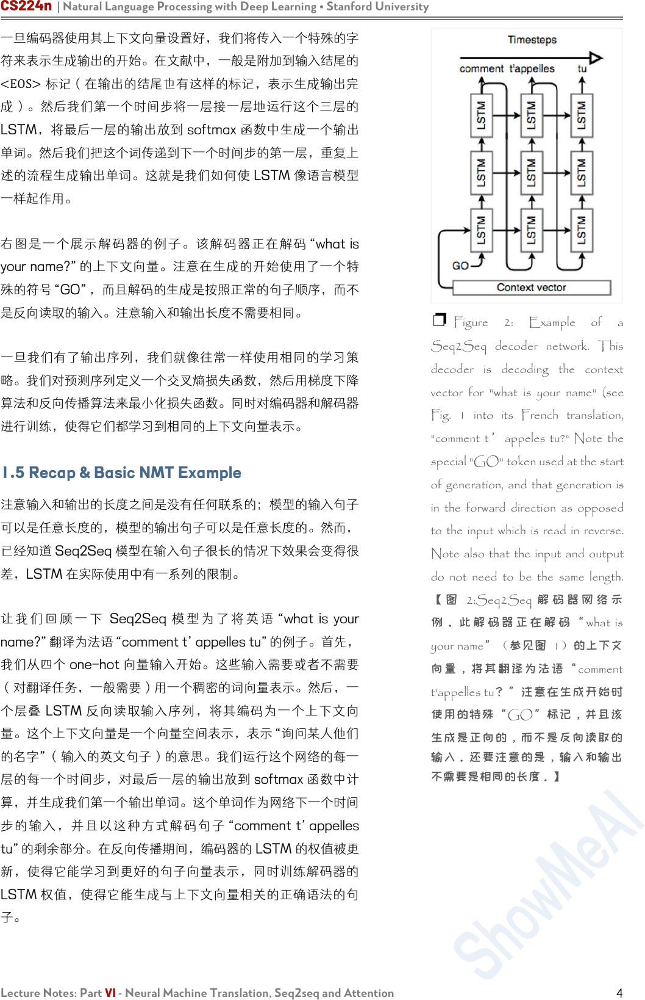
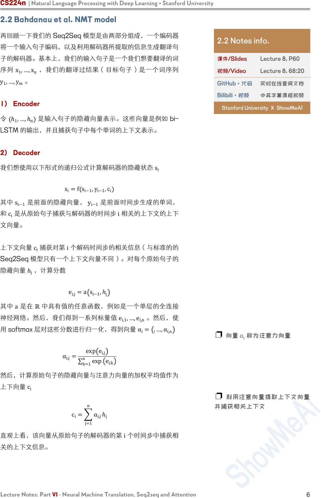
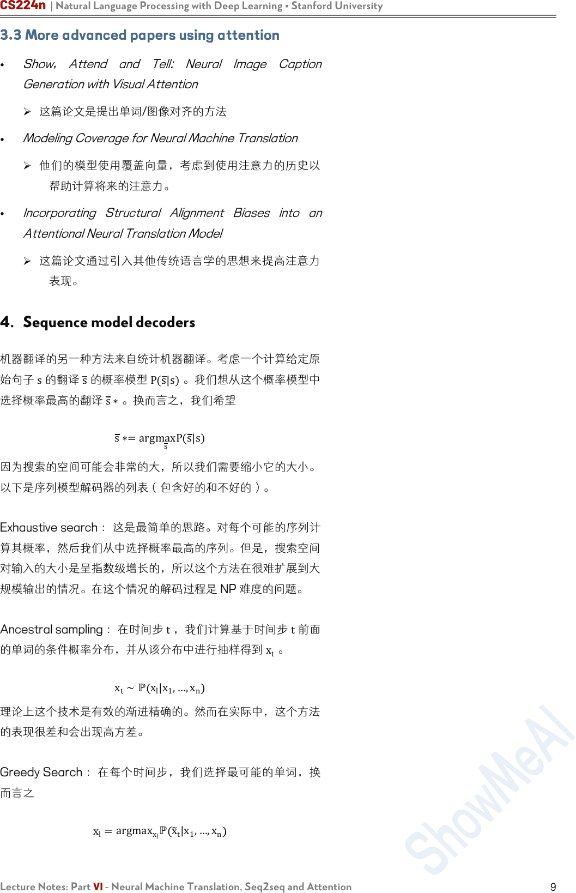
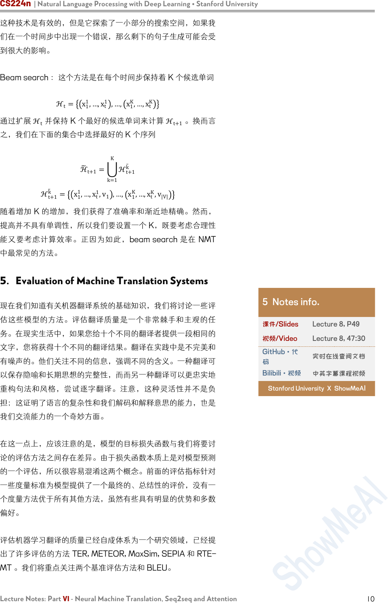
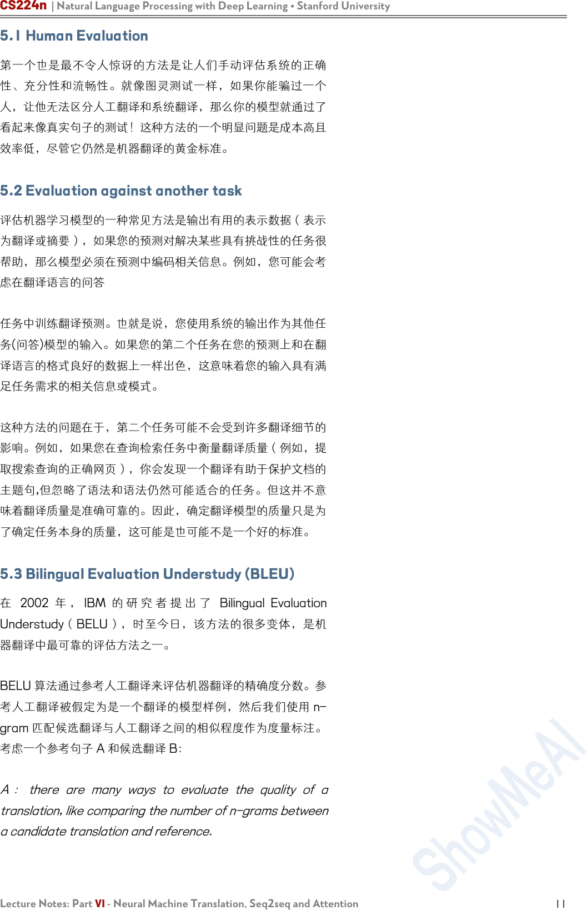
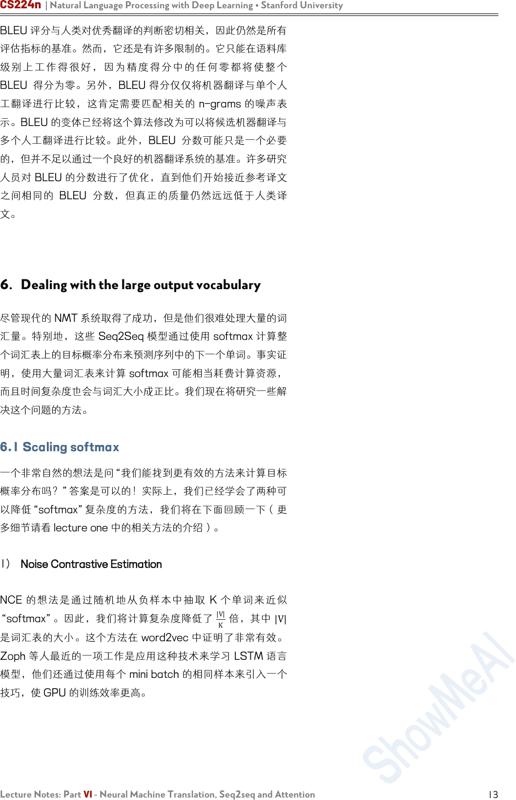
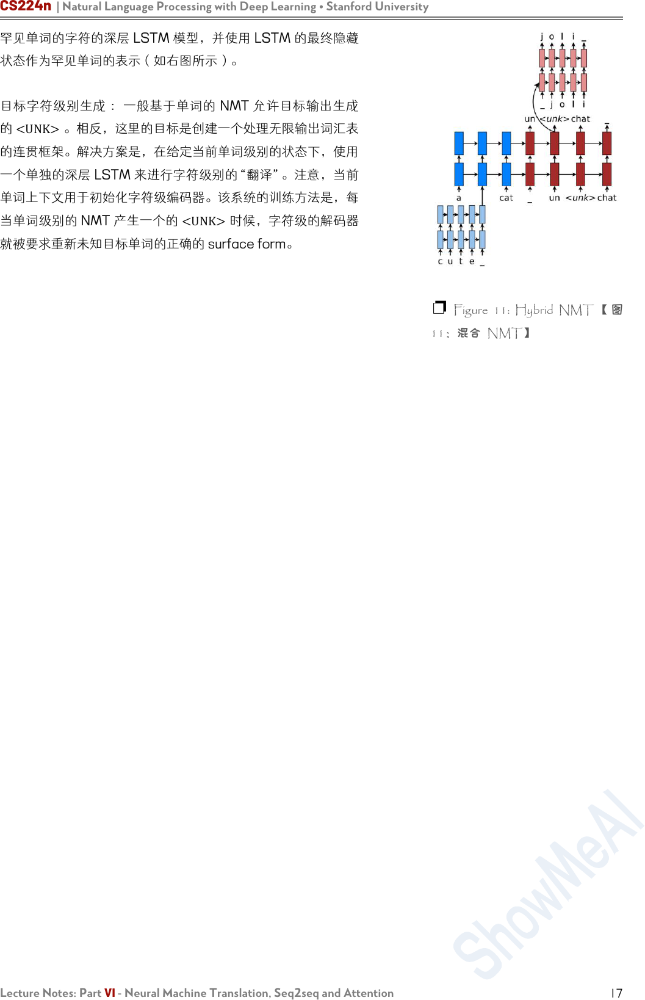
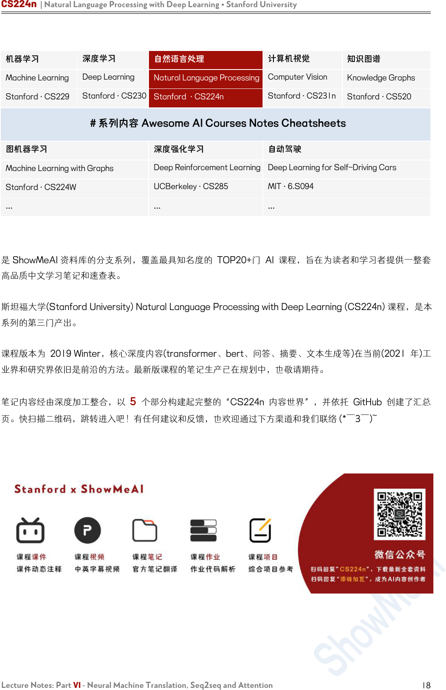

CS224n | Natural Language Processing with Deep Learning • Stanford University
Lecture Notes: Part VI - Neural Machine Translation, Seq2seq and Attention
1
Lecture Notes: Part VI
Neural Machine Translation, Seq2seq and Attention
CS224n 是顶级院校斯坦福出品的深度学习与自然语言处理方
向 专 业 课 程 ， 核 心 内 容 覆 盖 RNN 、 LSTM 、 CNN 、
transformer、bert、问答、摘要、文本生成、语言模型、阅读
理解等前沿内容。
笔记核心词：
Seq2Seq and Attention Mechanisms, Neural Machine
Translation, Speech Processing
课程全部资料和信息已整理发布，扫描下方任意二维码，均可
获取！！
微信公众号·全套资料
回复 CS224n
底部菜单栏
Bilibili·课程视频
视频简介
置顶评论
GitHub·项目代码
阅读 ReadMe
点击超链接

CS224n | Natural Language Processing with Deep Learning • Stanford University
Lecture Notes: Part VI - Neural Machine Translation, Seq2seq and Attention
2
1. Neural Machine Translation with Seq2Seq
到目前为止，我们已经处理了预测单个输出的问题：一个单词的
NER 标签，在一个句子中根据前面的单词来预测下一个最可能
的单词，等等。然而有一类的 NLP 任务是依赖序列输出的，或
者输出是长度变化的序列。例如：
• Translation ：将一种语言的一个句子作为输入，然后输出
是另外一种语言的相同的意思的句子。
•
Conversation ：以陈述或问题作为输入并作出回应。
•
Summarization ：将大量文本作为输入并输出其摘要。
在下面的部分，我们将介绍 Seq2Seq 模型，一个用来处理上述
问题的深度学习框架。这个框架被证明了是非常有效的，在不到
三年的时间里成为了机器翻译的标准方法。
1.1 Brief Note on Historical Approaches
在过去，翻译系统是基于概率模型构建的
•
一个 翻译模型 ，告诉我们一个源语言中最有可能被翻译为
的句子/短语。
•
一个 语言模型 ，告诉我们给定句子/短语的整体可能性。
这些组成部分用于构建基于单词或短语的翻译系统。正如你所想
到的，一个简单的的基于单词的翻译系统将完全不能捕获语言之
间的排序差异（例如，否定词移动，句子中的主语和动词的位置
等）。
基于短语的翻译系统在 Seq2Seq 之前是非常常见的。基于短语
的翻译系统可以根据短语序列考虑输入和输出，相比比基于词的
系统可以处理更复杂的语法。然而，在基于短语的翻译系统仍然
难以捕获长距离的信息。
Seq2Seq 带来很大的优势，尤其是使用 LSTM，现代翻译系统
可以在观测到整个输入后生成任意的输出序列。他们甚至可以自
动地专注于输入的特定部分，以帮助生成有用的翻译。
1.2 Sequence-to-sequence Basics
序列到序列，或者 Seq2Seq，是一个比较新的模型，在 2014
年被提出用英语-法语翻译。在更高的层面上，Seq2Seq 是一
个有两个 RNN 组成的端到端模型
1 Notes info.
课件/Slides
Lecture 8, P23
视频/Video
Lecture 8, 17:30
GitHub·代码
实时在线查阅文档
Bilibili·视频
中英字幕课程视频
Stanford University X ShowMeAI
1.1 Notes info.
课件/Slides
Lecture 8, P7
视频/Video
Lecture 8, 6:00
GitHub·代码
实时在线查阅文档
Bilibili·视频
中英字幕课程视频
Stanford University X ShowMeAI
1.2 Notes info.
课件/Slides
Lecture 8, P24
视频/Video
Lecture 8, 18:00
GitHub·代码
实时在线查阅文档
Bilibili·视频
中英字幕课程视频
Stanford University X ShowMeAI

CS224n | Natural Language Processing with Deep Learning • Stanford University
Lecture Notes: Part VI - Neural Machine Translation, Seq2seq and Attention
3
• 一个 encoder 编码器，将模型的输入序列作为输入，然后
编码固定大小的“上下文向量”。
•
一个 decoder 解码器，使用来自编码器生成的上下文向量
作为从其生成输出序列的“种子”。
因此，Seq2Seq 模型通常被称为“编码器-解码器模型”。接下
来我们将分别讨论这两个网络的细节。
1.3 Seq2Seq architecture - encoder
编码器网络的作用是读取输入序列到我们的 Seq2Seq 模型中，
然后对该序列生成一个固定维度的上下文向量
C
。为此，编码
器使用一个循环神经网络单元——一般使用 LSTM——每个时
间步读取一个输入单词。单元的最终隐藏状态就是
C
。然而，
因为将一个任意长度序列压缩到一个单一固定大小的向量是很困
难的（特别是像翻译这样的困难任务），编码器通常由堆叠的
LSTM 组成：一系列 LSTM“层”，其中每层的输出是下一层的
输入序列。LSTM 最后一层的最终隐藏状态就是
C
。
Seq2Seq 编码器通常会做一些奇怪的事情：它们将反向处理输
入序列。实际上这么处理是有目的的。通过这样做，编码器看到
的最后的信息（粗略地）对应于模型输出的开始信息；这使得解
码器更容易在输出上“开始”，同时解码器也更容易地产生适当
的输出句子。在翻译的环境中，我们允许网络在看到输入的前几
个单词时就进行翻译；一旦前几个单词被正确地翻译，构建一个
正确的句子比从头开始更加容易。
右图是一个展示编码器的例子，这个例子是翻译英语句子“what
is your name?”注意这里是反向读取输入单词的。注意网络是
展开的，每一列是一个时间步和每一行是单一层，所以水平箭头
是对应隐藏状态和垂直箭头是 LSTM 的输入/输出。
1.4 Seq2Seq architecture - decoder
解码器也是一个 LSTM 网络，但是它的使用比编码器网络略微
复杂。从本质上讲，我们希望它能作为一个语言模型，可以“知
道”到目前为止生成的单词和输入。为此，我们将编码器保持
“堆叠”的 LSTM 架构，但是我们将使用编码器生成的上下文向
量来初始化第一层的隐藏层；然后编码器将使用输入的上下文向
量来逐词地生成输出。
❐ Figure 1: Example of a
Seq2Seq encoder network. This
model may be used to translate the
English sentence "what is your
name?" Note that the input tokens
are read in reverse. Note that the
network is unrolled; each column is a
timestep and each row is a single
layer, so that horizontal arrows
correspond to hidden states and
vertical arrows are LSTM
inputs/outputs. 【 图 1:Seq2Seq
编码器网络示例。此模型可用于翻
译 英 语 句 子 “ what is your
name？”。请注意，输入标记是反
向读取的。注意网络是展开的；每
列 是一 个 时 间 步 ， 每 行 是 一 个 单
层 ， 因 此 水 平 箭 头 对 应 于 隐 藏 状
态，垂直箭头是 LSTM 输入/输
出。】
1.4 Notes info.
课件/Slides
Lecture 8, P28
视频/Video
Lecture 8, 31:20
GitHub·代码
实时在线查阅文档
Bilibili·视频
中英字幕课程视频
Stanford University X ShowMeAI

CS224n | Natural Language Processing with Deep Learning • Stanford University
Lecture Notes: Part VI - Neural Machine Translation, Seq2seq and Attention
4
一旦编码器使用其上下文向量设置好，我们将传入一个特殊的字
符来表示生成输出的开始。在文献中，一般是附加到输入结尾的
<EOS>
标记（在输出的结尾也有这样的标记，表示生成输出完
成）。然后我们第一个时间步将一层接一层地运行这个三层的
LSTM，将最后一层的输出放到 softmax 函数中生成一个输出
单词。然后我们把这个词传递到下一个时间步的第一层，重复上
述的流程生成输出单词。这就是我们如何使 LSTM 像语言模型
一样起作用。
右图是一个展示解码器的例子。该解码 器正在解码“what is
your name?”的上下文向量。注意在生成的开始使用了一个特
殊的符号“GO”，而且解码的生成是按照正常的句子顺序，而不
是反向读取的输入。注意输入和输出长度不需要相同。
一旦我们有了输出序列，我们就像往常一样使用相同的学习策
略。我们对预测序列定义一个交叉熵损失函数，然后用梯度下降
算法和反向传播算法来最小化损失函数。同时对编码器和解码器
进行训练，使得它们都学习到相同的上下文向量表示。
1.5 Recap & Basic NMT Example
注意输入和输出的长度之间是没有任何联系的；模型的输入句子
可以是任意长度的，模型的输出句子可以是任意长度的。然而，
已经知道 Seq2Seq 模型在输入句子很长的情况下效果会变得很
差，LSTM 在实际使用中有一系列的限制。
让 我 们 回 顾 一 下 Seq2Seq 模 型 为 了 将 英 语 “what is your
name?”翻译为法语“comment t’appelles tu”的例子。首先，
我们从四个 one-hot 向量输入开始。这些输入需要或者不需要
（对翻译任务，一般需要）用一个稠密的词向量表示。然后，一
个层叠 LSTM 反向读取输入序列，将其编码为一个上下文向
量。这个上下文向量是一个向量空间表示，表示“询问某人他们
的名字”（输入的英文句子）的意思。我们运行这个网络的每一
层的每一个时间步，对最后一层的输出放到 softmax 函数中计
算，并生成我们第一个输出单词。这个单词作为网络下一个时间
步的 输入 ，并 且以这种方式 解码句 子“comment t’appelles
tu”的剩余部分。在反向传播期间，编码器的 LSTM 的权值被更
新，使得它能学习到更好的句子向量表示，同时训练解码器的
LSTM 权值，使得它能生成与上下文向量相关的正确语法的句
子。
❐ Figure 2: Example of a
Seq2Seq decoder network. This
decoder is decoding the context
vector for "what is your name" (see
Fig. 1 into its French translation,
"comment t ’ appeles tu?" Note the
special "GO" token used at the start
of generation, and that generation is
in the forward direction as opposed
to the input which is read in reverse.
Note also that the input and output
do not need to be the same length.
【 图 2:Seq2Seq 解 码 器 网 络 示
例 。 此 解 码 器 正 在 解 码 “ what is
your name”（参见图 1）的上下文
向量， 将其翻 译 为法 语 “comment
t'appelles tu？”注意在生成开始时
使用的特殊“GO”标记，并且该
生成是正向的，而不是反向读取的
输入。还要注意的是，输入和输出
不需要是相同的长度。】

CS224n | Natural Language Processing with Deep Learning • Stanford University
Lecture Notes: Part VI - Neural Machine Translation, Seq2seq and Attention
5
• Encoder：逐层运行，每一层的输出是下一层的输入
• Decoder：逐时间步运行，每一个时间步的最后一层的输
出是下一个时间步的第一层的输入
1.6 Bidirectional RNNs
之前讨论过句子的依赖不仅仅在一个方向的传播起作用；一个单
词可以依赖它前面或者后面的单词。到目前为止，我们已经讨论
过的 Seq2Seq 模型并没有考虑到这一点；在每个时间步，我们
只是考虑当前时间步的单词的前面单词的信息（通过 LSTM 的
隐藏状态）。对于 NMT，我们需要能够有效地对任意输入进行
编码，而不管与输入之间的依赖关系的方向，因此这才能够让获
得的信息不会减少。
双向 RNN 通过遍历序列的两个方向并连接所得到的输出（神
经元输出和最终隐藏状态都进行连接）来解决这个问题。对于每
个 RNN 神经元，我们简单地添加另一个神经元，但是以相反的
方向向其放入输入；对应第 t 个单词的输出
o
t
是连接了向量
o
t
(f)
o
t
(b)
，其中
o
t
(f)
是词 t 在正向的 RNN 的输出，
o
t
(b)
是词
t 在 反 向 的 RNN 的 输 出 。 类 似 地 ， 最 终 隐 藏 状 态 是
ℎ
(f)
ℎ
(b)
，其中 ℎ
(f)
是正向的 RNN 的最终隐藏状态和 ℎ
(b)
是
反向的 RNN 的最终隐藏状态。右图是一个双向 LSTM 解码器
的例子。
2. Attention Mechanism
2.1 Motivation
当你听到句子“the ball is on the field”，你不会认为这 6 个单
词 都 一 样 重 要 。 你 首 先 会 注 意 到 单 词 “ball” ， “on” 和
“field” ， 因 为 这 些 单 词 你 是 觉 得 最 “ 重 要 ” 的 。 类 似 的 ，
Bahdanau 等人注意到使用 RNN 的最终状态作为 Seq2Seq 模
型的单一“上下文向量”的缺点：一般而言，输入的不同部分具
有不同的重要程度。再者，此外，输出的不同部分甚至可以考虑
输入的不同部分是“重要”的。例如，在翻译任务中，输出的第
一个单词是一般是基于输入的前几个词，输出的最后几个词可能
基于输入的几个词。
注意机制利用这一观察结果，为解码器网络提供了在每个解码步
骤查看整个输入序列的功能；然后解码器可以在任何时间点决定
哪些输入单词是重要的。有很多类型的编码器机制，但是我们将
讨论由 Bahdanau 提出的机制。
❐ Figure 3: Example of a single-
layer bidirectional LSTM encoder
network. Note that the input is fed
into two different LSTM layers,
but in different directions, and the
hidden states are concatenated to
get the final context vector.【图 3：
单 层 双 向 LSTM 编 码 器 网 络 示
例。注意，输入被输入到两个不同
的 LSTM 层中，但是方向不同，
隐藏状态被连接起来以得到最终的
上下文向量。】
2 Notes info.
课件/Slides
Lecture 8, P57
视频/Video
Lecture 8, 67:38
GitHub·代码
实时在线查阅文档
Bilibili·视频
中英字幕课程视频
Stanford University X ShowMeA
I
2.1 Notes info.
课件/Slides
Lecture 8, P58
视频/Video
Lecture -, 00:00
GitHub·代码
实时在线查阅文档
Bilibili·视频
中英字幕课程视频
Stanford University X ShowMeAI

CS224n | Natural Language Processing with Deep Learning • Stanford University
Lecture Notes: Part VI - Neural Machine Translation, Seq2seq and Attention
6
2.2 Bahdanau et al. NMT model
再回顾一下我们的 Seq2Seq 模型是由两部分组成，一个编码器
将一个输入句子编码，以及利用解码器所提取的信息生成翻译句
子的解码器。基本上，我们的输入句子是一个我们想要翻译的词
序列 x
1
,…,
x
n
，我们的翻译过结果（目标句子）是一个词序列
y
1
,…,
y
m
。
1) Encoder
令
ℎ
1
,…,
ℎ
n
是输入句子的隐藏向量表示。这些向量是例如 bi-
LSTM 的输出，并且捕获句子中每个单词的上下文表示。
2) Decoder
我们想使用以下形式的递归公式计算解码器的隐藏状态
s
i
s
i
=f s
i−1
,
y
i−1
,
c
i
其中
s
i−1
是前面的隐藏向量，
y
i−1
是前面时间步生成的单词，
和 c
i
是从原始句子捕获与解码器的时间步 i相关的上下文的上下
文向量。
上下文向量
c
i
捕获对第
i
个解码时间步的相关信息（与标准的的
Seq2Seq 模型只有一个上下文向量不同）。对每个原始句子的
隐藏向量 ℎ
j
，计算分数
e
i,j
=a s
i−1
,ℎ
j
其中
a
是在
ℝ
中具有值的任意函数，例如是一个单层的全连接
神经网络。然后，我们得到一系列标量值
e
i,1
,…,e
i,n
。然后，使
用 softmax 层对这些分数进行归一化，得到向量
α
i
=
,…,
α
i,n
α
i,j
=
exp e
i,j
k=1
n
exp
e
i,k
然后，计算原始句子的隐藏向量与注意力向量的加权平均值作为
上下向量
c
i
c
i
=
j=1
n
α
i,j
ℎ
j
直观上看，该向量从原始句子的解码器的第
i
个时间步中捕获相
关的上下文信息。
2.2 Notes info.
课件/Slides
Lecture 8, P60
视频/Video
Lecture 8, 68:20
GitHub·代码
实时在线查阅文档
Bilibili·视频
中英字幕课程视频
Stanford University X ShowMeAI
❐ 向量
α
i
称为注意力向量
❐ 利用注意向量提取上下文向量
并捕获相关上下文

CS224n | Natural Language Processing with Deep Learning • Stanford University
Lecture Notes: Part VI - Neural Machine Translation, Seq2seq and Attention
7
2.3 Connection with translation alignment
基于注意力的模型为输出的每个时间步分配对输入的不同部分的
显着性（“重要性”）。在翻译任务中，注意力可以认为是“对
齐”。Bahdanau 等人认为在解码的时间步 i中的注意力分数 α
ij
表示源句子中的单词对齐目标句子中的单词 i。注意到这一点，
我们可以使用注意力分数来构建一个对齐表——这个表是将源句
子中的单词映射到目标句子中的相应单词——基于从我们从
Seq2Seq NMT 系统中学习到的编码器和解码器。右图是一个
对齐表的例子：
2.4 Performance on long sentences
基于注意力模型的主要优点是能够有效地翻译长句。当句子的输
入长度变大时，模型如果只使用最终隐藏状态表示而不使用注意
机制，这会丢失信息和降低准确度。注意力机制是一个聪明的方
式来解决这个问题，并且现在很多实验也证实了确实如此。右图
是长句子在不同的 NMT 模型中的表现：
3. Other Models
3.1 Luong et al. NMT model
Luong 等 人 在 论 文 《 Effective Approaches to Attention-
based Neural Machine Translation》 提出了一个注意力机制
模型的变体，是由两个不同的注意力机制组成。
Global attention ：我们运行简单的 Seq2Seq NMT。我们称
编码器的隐藏状态
ℎ
1
,…,ℎ
n
，解码器的隐藏状态
ℎ
1
,…,ℎ
n
。现在
对每个
ℎ
i
，我们计算编码器的隐藏状态的注意力向量。我们可
以使用下面其中一个得分函数：
score ℎ
i
,ℎ
j
=
ℎ
i
T
ℎ
j
ℎ
i
T
Wℎ
j
∈ℝ
Wℎ
i
,ℎ
j
• 现在我们有一个分数的向量，然后可以用 Bahdanau 等人
提出的方法来计算一个上下文向量。首先，我们通过一个
softmax 层 来 对 分 数 进 行 归 一 化 ， 得 到 向 量
α
i
=
α
i,1
,…,
α
i,n
α
i,j
=
exp score ℎ
j
,ℎ
i
k=1
n
exp
score ℎ
k
,ℎ
i
❐ Figure 4: Example of an
alignment table 【 图 4 ： 对 齐 表 示
例】
❐ Figure 5: Performance on long
sentence of different NMT models -
image taken from Luong et al. 【 图
5：不同 NMT 模型在长句上的表
现-图片来自 Luong 等人。】

CS224n | Natural Language Processing with Deep Learning • Stanford University
Lecture Notes: Part VI - Neural Machine Translation, Seq2seq and Attention
8
c
i
=
j=1
n
α
i,j
ℎ
j
•
然后再计算上下文向量，我们可以使用上下文向量和隐藏状
态对解码器的第 i个时间步计算一个新的向量
ℎ
i
=f ℎ
i
,c
i
• 最后一步是使用
ℎ
i
来对解码器进行最终预测。为了解决覆
盖问题，Luong 等人使用了一个 input-feeding 方法。注
意力加权的向量
ℎ
i
是作为解码器的输入，而不是最终预
测。这类似于 Bahdanau 等人提出的方法，他们使用上下
文向量来计算解码器的隐藏向量。
Local attention ：该模型预测输入序列中的对齐位置。然后，
它使用以此位置为中心的窗口来计算上下文向量。这个计算耗费
的计算资源是恒定的，不会随着句子的长度而暴增。
有很多方法来使用注意力机制。
3.2 Google’s new NMT
简而言之，Google 最近通过提升自己的翻译系统为 NMT 做出
了重大突破。不是为他们支持翻译的每一种语言维护一个完整的
Seq2Seq 模型——每种语言必须单独进行训练，而是构建一个
单独系统可以翻译任意两种语言，这在数据和计算时间方面都是
一个巨大的成就。这是一个 Seq2Seq 模型，它接受一个单词序
列和一个指定要翻译的语言的符号作为输入。该模型使用共享参
数来翻译为任何目标语言。
这个新的的多语言模式不仅改善了他们的翻译表现，还能够“零
数据翻译”，即使我们没有翻译的训练数据。我们也可以在两种
语言之间进行翻译。例如，我们如果仅有日语-英语的翻译数据
和韩语-英语的翻译数据，Google 团队发现多语言 NMT 系统对
这些数据进行训练后的实际上可以产生合理的日语-韩语翻译。
这个发现的重要意义在于，解码过程的部分并不是特定于语言
的，而且该模型实际上维持一个了 独立于所涉及的实际语言的
输入/输出句子的内部表示 。
❐ Figure 6: Example of Google’s
system【图 6：谷歌系统示例】

CS224n | Natural Language Processing with Deep Learning • Stanford University
Lecture Notes: Part VI - Neural Machine Translation, Seq2seq and Attention
9
3.3 More advanced papers using attention
•
Show, Attend and Tell: Neural Image Caption
Generation with Visual Attention
这篇论文是提出单词/图像对齐的方法
•
Modeling Coverage for Neural Machine Translation
他们的模型使用覆盖向量，考虑到使用注意力的历史以
帮助计算将来的注意力。
•
Incorporating Structural Alignment Biases into an
Attentional Neural Translation Model
这篇论文通过引入其他传统语言学的思想来提高注意力
表现。
4. Sequence model decoders
机器翻译的另一种方法来自统计机器翻译。考虑一个计算给定原
始句子
s
的翻译
s
的概率模型
P(s|s)
。我们想从这个概率模型中
选择概率最高的翻译 s∗。换而言之，我们希望
s∗=argmax
s
P(s|s)
因为搜索的空间可能会非常的大，所以我们需要缩小它的大小。
以下是序列模型解码器的列表（包含好的和不好的）。
Exhaustive search ：这是最简单的思路。对每个可能的序列计
算其概率，然后我们从中选择概率最高的序列。但是，搜索空间
对输入的大小是呈指数级增长的，所以这个方法在很难扩展到大
规模输出的情况。在这个情况的解码过程是 NP 难度的问题。
Ancestral sampling ：在时间步 t，我们计算基于时间步 t前面
的单词的条件概率分布，并从该分布中进行抽样得到 x
t
。
x
t
∼ℙ x
l
|x
1
,…,
x
n
理论上这个技术是有效的渐进精确的。然而在实际中，这个方法
的表现很差和会出现高方差。
Greedy Search ：在每个时间步，我们选择最可能的单词，换
而言之
x
l
=
argmax
x
l
ℙ x
t
|x
1
,…,x
n

CS224n | Natural Language Processing with Deep Learning • Stanford University
Lecture Notes: Part VI - Neural Machine Translation, Seq2seq and Attention
10
这种技术是有效的，但是它探索了一小部分的搜索空间，如果我
们在一个时间步中出现一个错误，那么剩下的句子生成可能会受
到很大的影响。
Beam search ：这个方法是在每个时间步保持着 K 个候选单词
ℋ
t
= x
1
1
,…,x
t
1
,…, x
1
K
,…,x
t
K
通过扩展
ℋ
t
并保持 K 个最好的候选单词来计算
ℋ
t+1
。换而言
之，我们在下面的集合中选择最好的 K 个序列
ℋ
t+1
=
k=1
K
ℋ
t+1
k
ℋ
t+1
k
= x
1
1
,…,x
t
1
,v
1
,…, x
1
K
,…,x
t
K
,v
|V|
随着增加 K 的增加，我们获得了准确率和渐近地精确。然而，
提高并不具有单调性，所以我们要设置一个 K，既要考虑合理性
能又要考虑计算效率。正因为如此，beam search 是在 NMT
中最常见的方法。
5. Evaluation of Machine Translation Systems
现在我们知道有关机器翻译系统的基础知识，我们将讨论一些评
估这些模型的方法。评估翻译质量是一个非常棘手和主观的任
务。在现实生活中，如果您给十个不同的翻译者提供一段相同的
文字，您将获得十个不同的翻译结果。翻译在实践中是不完美和
有噪声的。他们关注不同的信息，强调不同的含义。一种翻译可
以保存隐喻和长期思想的完整性，而而另一种翻译可以更忠实地
重构句法和风格，尝试逐字翻译。注意，这种灵活性并不是负
担；这证明了语言的复杂性和我们解码和解释意思的能力，也是
我们交流能力的一个奇妙方面。
在这一点上，应该注意的是，模型的目标损失函数与我们将要讨
论的评估方法之间存在差异。由于损失函数本质上是对模型预测
的一个评估，所以很容易混淆这两个概念。前面的评估指标针对
一些度量标准为模型提供了一个最终的、总结性的评价，没有一
个度量方法优于所有其他方法，虽然有些具有明显的优势和多数
偏好。
评估机器学习翻译的质量已经自成体系为一个研究领域，已经提
出了许多评估的方法 TER, METEOR, MaxSim, SEPIA 和 RTE-
MT 。我们将重点关注两个基准评估方法和 BLEU。
5 Notes info.
课件/Slides
Lecture 8, P49
视频/Video
Lecture 8, 47:30
GitHub·代
码
实时在线查阅文档
Bilibili·视频
中英字幕课程视频
Stanford University X ShowMeAI

CS224n | Natural Language Processing with Deep Learning • Stanford University
Lecture Notes: Part VI - Neural Machine Translation, Seq2seq and Attention
11
5.1 Human Evaluation
第一个也是最不令人惊讶的方法是让人们手动评估系统的正确
性、充分性和流畅性。就像图灵测试一样，如果你能骗过一个
人，让他无法区分人工翻译和系统翻译，那么你的模型就通过了
看起来像真实句子的测试！这种方法的一个明显问题是成本高且
效率低，尽管它仍然是机器翻译的黄金标准。
5.2 Evaluation against another task
评估机器学习模型的一种常见方法是输出有用的表示数据（表示
为翻译或摘要），如果您的预测对解决某些具有挑战性的任务很
帮助，那么模型必须在预测中编码相关信息。例如，您可能会考
虑在翻译语言的问答
任务中训练翻译预测。也就是说，您使用系统的输出作为其他任
务(问答)模型的输入。如果您的第二个任务在您的预测上和在翻
译语言的格式良好的数据上一样出色，这意味着您的输入具有满
足任务需求的相关信息或模式。
这种方法的问题在于，第二个任务可能不会受到许多翻译细节的
影响。例如，如果您在查询检索任务中衡量翻译质量（例如，提
取搜索查询的正确网页），你会发现一个翻译有助于保护文档的
主题句,但忽略了语法和语法仍然可能适合的任务。但这并不意
味着翻译质量是准确可靠的。因此，确定翻译模型的质量只是为
了确定任务本身的质量，这可能是也可能不是一个好的标准。
5.3 Bilingual Evaluation Understudy (BLEU)
在 2002 年 ， IBM 的 研 究 者 提 出 了 Bilingual Evaluation
Understudy（BELU），时至今日，该方法的很多变体，是机
器翻译中最可靠的评估方法之一。
BELU 算法通过参考人工翻译来评估机器翻译的精确度分数。参
考人工翻译被假定为是一个翻译的模型样例，然后我们使用 n-
gram 匹配候选翻译与人工翻译之间的相似程度作为度量标注。
考虑一个参考句子 A 和候选翻译 B：
A ： there are many ways to evaluate the quality of a
translation, like comparing the number of n-grams between
a candidate translation and reference.

CS224n | Natural Language Processing with Deep Learning • Stanford University
Lecture Notes: Part VI - Neural Machine Translation, Seq2seq and Attention
12
B： the quality of a translation is evaluate of n-grams in a
reference and with translation.
BELU 分数是查找在机器翻译中是否有 n-grams 也出现在参考
翻译中。以下彩色的翻译是参考翻译和候选翻译之间共享的不同
大小的 n-grams 的一些示例。
A ： there are many ways to evaluate the quality of a
translation, like comparing the number of n-grams between
a candidate translation and reference.
B： the quality of a translation is evaluate of n-grams in a
reference and with translation.
BELU 算法通过识别上述所有的 n-grams 匹配，包括 unigram
匹配，然后用精确度分数来评估翻译的好坏。精确度分数是 n-
grams 既出现在参考翻译中也出现在机器翻译中的百分比。
这个算法也满足其他的两个限制。对每个 n-grams 的大小，参
考翻译中的 gram 不能匹配多于一次。例如，unigram “a” 在
B 中出现了两次而在 A 中只出现了一次。这只统计两个翻译句
子之间匹配一次的的次数。另外，我们强加一个简单的惩罚，使
得精确度分数是 1.0（“完美”匹配）的短句子不被认为是一个
很好的翻译结果。例如，对单个单词 there 会得到一个精确度
分数为 1.0 的匹配，但是很明显这不是一个好的匹配。
接下来我们看看实际中如何计算 BELU 分数。首先令 k 是我们
要评估的分数的最大 n-gram 。即如果 k=4，BELU 分数仅计算
大小
≤4
的 n-grams ，并忽略大于 4 的 n-grams 。令
=#matched n-grams/# n-grams in candidate translation
为对长度是 n 的 grams 的精确度分数。最后，令
w
n
=1/2
n
是
第 n 个 gram 的几何加权。我们简单惩罚的定义为
β=
e
min
0,1−
len
ref
len
MT
其中
len
ref
是参考翻译的句子长度，
len
MT
是机器翻译的句子长
度。
BELU 分数然后定义为：
BELU=β
i=1
k
p
n
w
n

CS224n | Natural Language Processing with Deep Learning • Stanford University
Lecture Notes: Part VI - Neural Machine Translation, Seq2seq and Attention
13
BLEU 评分与人类对优秀翻译的判断密切相关，因此仍然是所有
评估指标的基准。然而，它还是有许多限制的。它只能在语料库
级 别 上 工 作 得 很 好 ， 因 为 精 度 得 分 中 的 任 何 零 都 将 使 整 个
BLEU 得分为零。另外，BLEU 得分仅仅将机器翻译与单个人
工翻译进行比较，这肯定需要匹配相关的 n-grams 的噪声表
示。BLEU 的变体已经将这个算法修改为可以将候选机器翻译与
多个人工翻译进行比较。此外，BLEU 分数可能只是一个必要
的，但并不足以通过一个良好的机器翻译系统的基准。许多研究
人员对 BLEU 的分数进行了优化，直到他们开始接近参考译文
之间相同的 BLEU 分数，但真正的质量仍然远远低于人类译
文。
6. Dealing with the large output vocabulary
尽管现代的 NMT 系统取得了成功，但是他们很难处理大量的词
汇量。特别地，这些 Seq2Seq 模型通过使用 softmax 计算整
个词汇表上的目标概率分布来预测序列中的下一个单词。事实证
明，使用大量词汇表来计算 softmax 可能相当耗费计算资源，
而且时间复杂度也会与词汇大小成正比。我们现在将研究一些解
决这个问题的方法。
6.1 Scaling softmax
一个非常自然的想法是问“我们能找到更有效的方法来计算目标
概率分布吗？”答案是可以的！实际上，我们已经学会了两种可
以降低“softmax”复杂度的方法，我们将在下面回顾一下（更
多细节请看 lecture one 中的相关方法的介绍）。
1) Noise Contrastive Estimation
NCE 的想法是 通过随机 地从 负样本中抽取 K 个单词来近似
“softmax”。因此，我们将计算复杂度降低了
|V|
K
倍，其中
|V|
是词汇表的大小。这个方法在 word2vec 中证明了非常有效。
Zoph 等人最近的一项工作是应用这种技术来学习 LSTM 语言
模型，他们还通过使用每个 mini batch 的相同样本来引入一个
技巧，使 GPU 的训练效率更高。

CS224n | Natural Language Processing with Deep Learning • Stanford University
Lecture Notes: Part VI - Neural Machine Translation, Seq2seq and Attention
14
2) Hierarchical Softmax
Morin 等人提出了一个二叉树结构从而能够更有效率地计算 目
标 分 布 中 的 每 个 概 率 都 是 通 过 将 树 上 的 一 个 路 径 计 算 出 来
“softmax”，该计算该路径只需要 O(log|V|)步长。值得注意的
是，尽管 Hierarchical Softmax 可以节省计算量，但是它不能
在 GPU 上并行运算。
这两种方法的一个限制是它们仅在训练阶段中节省计算量（当目
标词已知时）。在测试阶段，我们还需要计算词汇表中的所有单
词的概率，然后做出预测。
6.2 Reducing vocabulary
除了优化“softmax”，我们还可以尝试减少有效的词汇量，这
将加快训练和测试过程。一种简单的方法是将词汇量限制在一个
很小的数量上，用一个标签
<UNK>
替换限制后的词汇表外的单
词。现在，无论是训练和测试时间可以显着地降低了，但这显然
是不理想的，因为我们可能会产生很多
<UNK>
的输出。
Jean 等人提出了一种保持固定词汇大小
V
'
的方法， 通过将训
练数据分成具有
τ
个唯一目标单词的子集，其中
τ= V
'
。可以
通过依次扫描原始数据集直到检测 τ个唯一的目标单词，从而形
成一个子集（如右图所示）
然后按照上述过程遍历整个数据集，以产生所有的 mini-batch
子集。实际中，我们可以通过这个方法词汇量为
|V|=500K
实
现了 10 倍以上的节省（
V
'
=30K,50K）。
这个概念和 NCE 非常类似，对任意给定的单词，输出的词汇包
含目标单词和
V
'
−1个负（噪声）样例。然而，这两个方法主
要的不同是，对每个子集
V
'
，是从偏置分布
|Q|
中采样这些负
样例，其中
=
1
'
,if
∈
'
0,otherwise
在测试阶段，也可以从整个词汇表中选择一个子集(称为候选列
表)来预测目标单词。挑战在于，正确的目标词是未知的，我们
必须“猜测”目标词可能是什么。
❐ Figure 7: Training data partition
【图 7：训练数据分区】
❐ Figure 8: Candidate list 【 图
8：候选名单】
❐ Figure 9: Pointer network
Architecture【图 9：指针网络体系
结构】

CS224n | Natural Language Processing with Deep Learning • Stanford University
Lecture Notes: Part VI - Neural Machine Translation, Seq2seq and Attention
15
在论文中，作者提出使用
K
个最常用的单词（基于 unigram 概
率）和
K'
个可能的目标词为每个源句构建一个候选列表。在右
图中展示了一个
K
'
=3的例子和候选列表由紫色框中的所有单
词 组 成 。 在 实 际 中 ， 我 们 可 以 选 择 以 下 的 参 数 值 ：
K=
15k,30k,50k,
K
'
=10,20。
6.3 Handling unknown words
当 NMT 系统使用上面提到的方法来以降低有效词汇量，不可避
免地，某些单词将被映射到
<UNK>
。例如，当预测词（通常是
罕见词）不在候选列表中或当我们在测试阶段遇到未知的单词
时，可能会发生这种情况。我们需要新的机制来解决罕见和未知
的单词问题。
Gulcehre 等人提出了一个想法来处理这些问题：学习从源文本
中“复制”。该模型应用了注意力分布
l
t
来决定源文本中的指向
位置，并使用解码器的隐藏状态 S
t
来预测二分类变量 Z
t
，从而
决定何时从源文本中复制。
最后的预测结果是根据
Z
t
的值，在候选列表中由前面介绍的方
法使用 softmax 选择的词
y
t
w
，或者从源文本复制的
y
t
l
。他们
在论文中的结果表明，该方法提高了机器翻译和文本摘要等任务
的表现。
然而可以想到的是，这种方法也是有局限性的。这是要重点指出
的是在 Google NMT 论文中对这个方法的一个评论：“这种做
法在规模很大时是不可靠的——当网络是很深的时候，注意力机
制是不稳定的——而复制机制可能不是最适合处理罕见单词的策
略——有时音译更合适”。
7. Word and character-based models
如上一部分所述，“复制”机制在处理罕见或未知词语上仍然存
在不足。解决这些问题的另一个思路是在 sub-word 的级别进
行操作。一个趋势是使用相同的 Seq2Seq 架构，但是在更小的
单元上操作——基于字符的分词模型。另一个趋势是对单词和字
符采用混合架构。
7.1 Word segmentation
Sennrich 等人提出了一种通过将罕见和未知的单词作为一个
subword units 的序列来实现开放词汇翻译的方法。

CS224n | Natural Language Processing with Deep Learning • Stanford University
Lecture Notes: Part VI - Neural Machine Translation, Seq2seq and Attention
16
这通过调整称为 Byte Pair Encoding 的压缩算法来实现。基本
思想是从字符词汇表开始，并且继续扩展数据集中最常见的 n-
gram 对。例如，在右图中，我们的数据集包含 4 个单词，图中
的左边的表示单词频率，例如“low”出现了 5 次。用 (p,q,f)来
表示一个 n-gram 对
p,q
和出现的频率 f。如图中所示，我们已
经选择的频率最高的的 n-gram 对
(e,s,9)
，然后我们现在增加
当前频率最高的的 n-gram 对 (es,t,9)。重复此过程，直到所有
n-gram 对被选择过或词汇大小达到某个阈值。
我们可以选择为训练集和测试集构建单独的词汇表，或者共同构
建一个词汇表。在构建词汇表之后，一个带有 Seq2Seq 体系结
构的 NMT 系统（Bahdanau 等人在论文中使用的），可以直接
训练这些词段。值得注意的是，这种方法赢得了 WMT 2016 的
第一名。
7.2 Character-based model
Ling 等人提出了一种基于字符的模型来实现开放词汇表示。对
于具有 m 个字符的每个单词 w，该模型不是存储单词的词向
量，而是遍历所有字符
c
1
,c
2
…c
m
查找字符嵌入
e
1
,e
2
…e
m
。然
后将这些字符嵌入作为 biLSTM 输入，以分别获得用于前向和
后向的最终隐藏状态
ℎ
f
,ℎ
b
。最终的词向量是由两个隐藏状态的
仿射变换来计算而得：
e
w
=
W
f
H
f
+W
b
H
b
+b
7.3 Hybrid NMT
Luong 等人提出了一个混合词字模型来处理未知词，从而实现
开放词汇 NMT。系统主要进行单词级翻译，并查阅罕见单词的
字符组成。在高层次上，字符级循环神经网络计算源单词词表
示，并在需要时重新获得未知目标单词。这种混合方法的双重优
点在于，它的训练比基于字符的方法要快得多，而且更容易进行
训练；同时，它不会像基于单词的模型，产生未知的单词。
基于单词的翻译作为主干 ：混合 NMT 的核心是一个单词级翻
译的深度 LSTM 编码器—解码器。我们对每种语言维护大小
|V|
的词汇表和使用
<UNK>
来表示 OOV 词汇。
基于字符表示 ：在常规的基于单词的 NMT，是使用一个通用的
<UNK>
词向量来表示全部 OOV 词汇。这是有问题的，因为它
丢弃了关于源单词的有价值的信息。相反，我们学习了一个关于
❐ Figure 10: Byte Pair Encoding
【图 10：字节对编码】

CS224n | Natural Language Processing with Deep Learning • Stanford University
Lecture Notes: Part VI - Neural Machine Translation, Seq2seq and Attention
17
罕见单词的字符的深层 LSTM 模型，并使用 LSTM 的最终隐藏
状态作为罕见单词的表示（如右图所示）。
目标字符级别生成 ：一般基于单词的 NMT 允许目标输出生成
的
<UNK>
。相反，这里的目标是创建一个处理无限输出词汇表
的连贯框架。解决方案是，在给定当前单词级别的状态下，使用
一个单独的深层 LSTM 来进行字符级别的“翻译”。注意，当前
单词上下文用于初始化字符级编码器。该系统的训练方法是，每
当单词级别的 NMT 产生一个的 <UNK>时候，字符级的解码器
就被要求重新未知目标单词的正确的 surface form。
❐ Figure 11: Hybrid NMT 【 图
11：混合 NMT】

CS224n | Natural Language Processing with Deep Learning • Stanford University
Lecture Notes: Part VI - Neural Machine Translation, Seq2seq and Attention
18
机器学习
深度学习
自然语言处理
计算机视觉
知识图谱
Machine Learning
Deep Learning
Natural Language Processing
Computer Vision
Knowledge Graphs
Stanford · CS229
Stanford · CS230
Stanford · CS224n
Stanford · CS231n
Stanford · CS520
# 系列内容 Awesome AI Courses Notes Cheatsheets
图机器学习
深度强化学习
自动驾驶
Machine Learning with Graphs
Deep Reinforcement Learning
Deep Learning for Self-Driving Cars
Stanford · CS224W
UCBerkeley · CS285
MIT · 6.S094
...
...
...
是 ShowMeAI 资料库的分支系列，覆盖最具知名度的 TOP20+门 AI 课程，旨在为读者和学习者提供一整套
高品质中文学习笔记和速查表。
斯坦福大学(Stanford University) Natural Language Processing with Deep Learning (CS224n) 课程，是本
系列的第三门产出。
课程版本为 2019 Winter，核心深度内容(transformer、bert、问答、摘要、文本生成等)在当前(2021 年)工
业界和研究界依旧是前沿的方法。最新版课程的笔记生产已在规划中，也敬请期待。
笔记内容经由深度加工整合，以 5 个部分构建起完整的“CS224n 内容世界”，并依托 GitHub 创建了汇总
页。快扫描二维码，跳转进入吧！有任何建议和反馈，也欢迎通过下方渠道和我们联络 (*￣3￣)~